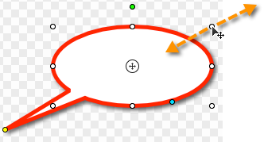
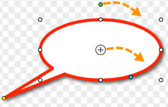

Use the Callout tool to create a variety of shapes that include text. Choose from arrows, balloons, and other shapes in the styles gallery or create your own. Tools and effects are only available for image captures.
Add callouts:
Select the Callout tool on the Tools tab.
Click to select a callout from the styles gallery or adjust the properties to create your own callout style.
Click and drag on the canvas to add the callout.
Type the desired callout text. To edit the font, size, color, and formating double-click within the callout. Click the Font button in the properties.
To edit the callout, click to select the callout on the canvas.
Move callout: Click within the callout and drag to a new position on the canvas.
Resize callout: Drag a white handle in or out. 
Flip callout: Select Arrange > Flip Horizontal or Flip Vertical
Rotate callout:

To rotate the entire callout, drag the green handle around the callout.
To rotate the callout around the tail, drag the anchor point in the center of the callout body.
Add a callout tail: Drag the blue handle away from the callout body to add a new tail.
 Callouts
Callouts